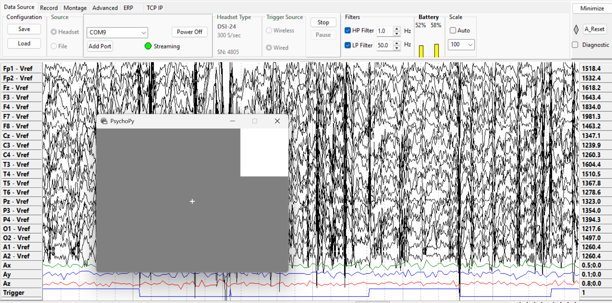

Hardware Triggers#
Instead of using a network-based method like LabStreamingLayer (LSL) to send virtual markers, you can use a serial port to send trigger values to your DSI headset via the TriggerHub. This method sends signals through your computer’s serial port using PsychoPy and MMBT-S. This tutorial explains how to set that up in a simple and easy way.
Connecting#
If you are using multiple triggers on the trigger hub, then you need to set the Trigger value to one that is not being used. If you are only using MMBTS then it can be any value. Depending on the headset you are using, the Trigger value will be limited.
from psychopy import visual, core
import serial
port = serial.Serial('COM10') #Change the COM port to match your MMBTS setup
Trigger = 1 # trigger code must be within range of headset
Trigger Value Range
DSI-24 and fNIRS offer 8-bits for the trigger value(0-255), wheras DSI-Flex, DSI-VR300, and DSI-7 only offer 4-bits(0-15).
Experiment#
In this simple experiment, a fixation cross is displayed on the screen. A white box also appears in the top right corner to serve as a light trigger for a photodiode.
# Set up the PsychoPy Window and Stimuli
win = visual.Window([800, 600], monitor="testMonitor", units="pix", color="gray")
win_width, win_height = win.size
# Rectangle to represent the trigger light
rect_size = (100, 100)
top_right_x = (win_width / 2) - (rect_size[0] / 2)
top_right_y = (win_height / 2) - (rect_size[1] / 2)
top_right_pos = (top_right_x, top_right_y)
lightTrig = visual.Rect(win, size=rect_size, fillColor="white", pos=top_right_pos)
fixation = visual.TextStim(win, text="+") # Fixation cross
Sending the Signal#
In this example, you will see a cross flash on the screen five times. Every time the cross flashes, the device sends a signal through the serial port.
Watch the screen: a cross will flash 5 times. A signal is sent out the serial port upon each flash.
for trial in range(5):
fixation.draw()
# Show the stimulus and send the marker almost simultaneously
win.callOnFlip(port.write, bytes(chr(Trigger), 'utf-8'))
win.flip()
core.wait(1.0) # fixation appears for 1 second
# wait for 2s
win.callOnFlip(port.write, bytes(chr(0), 'utf-8'))
win.flip()
core.wait(2.0)
# Cleanup
port.write(bytes(chr(0), 'utf-8')) # Reset the trigger
win.close()
core.quit()
port.close()
Latency
There exist latency between the stimulus appearing on the screen and the marker. This can be due to your device’s refresh rate, but the latency seem to be consistent.
Write to Port (win.callOnFlip())#
This function will call a function immediately after the next win.flip() command. The first argument should be the function to call, followed by the args exactly as you would for your normal call to the function.
Result#
The image below shows the window where the experiment is being shown, as well as DSI-Streamer. At the bottom you can see the ‘trigger” channel switching from 1 and 0 depending if the stimulus is on the screen or not.
{kind=link}
Resource#
For more in-depth documentation and API reference, please refer to: